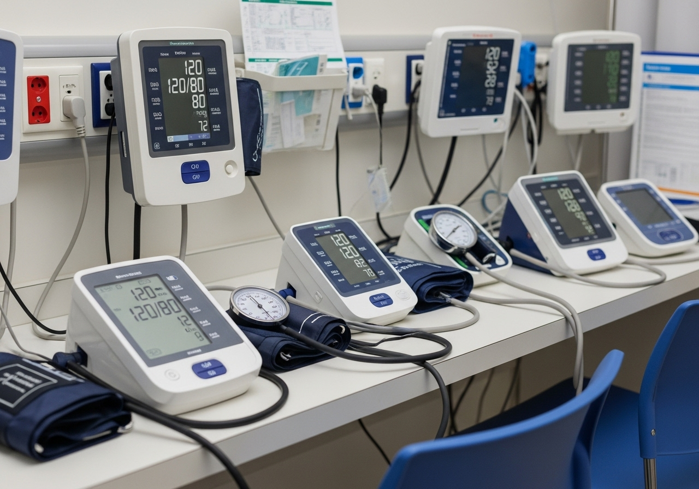

Equipment Repair Services
Request Service QuoteEquipment We Repair
Surgical

Endoscopes
Surgical

OR Lights & Booms
Surgical

Electrosurgical Units
Surgical

Surgical Microscopes
Surgical

Laser Equipment
Surgical

Video Imaging
Surgical

Anesthesia Machines
Surgical

Surgical Tables
Biomedical

Patient Monitoring Systems
Biomedical

Infusion Pumps
Biomedical

Defibrillators and Pacemakers
Biomedical

ECG/EKG Machines
Biomedical

Blood Pressure Monitors
Biomedical

Respiratory Therapy Equipment
Biomedical

Ultrasound Machines
Biomedical

X-Ray Equipment
Our Process
Initial Assessment
Our technicians perform a comprehensive evaluation to identify all issues and determine the most effective repair approach.
Thorough Cleaning
Equipment is carefully disassembled and cleaned using specialized medical-grade cleaning solutions, with detailed inspection of all components.
Precision Repair
We exclusively use Original Equipment Manufacturer parts to ensure compatibility and maintain warranty compliance when possible.
Performance Testing
All repaired equipment undergoes rigorous calibration and testing to meet or exceed manufacturer specifications.
Quality Assurance
A final inspection ensures all repairs are complete and the equipment functions properly before it's returned to your facility.